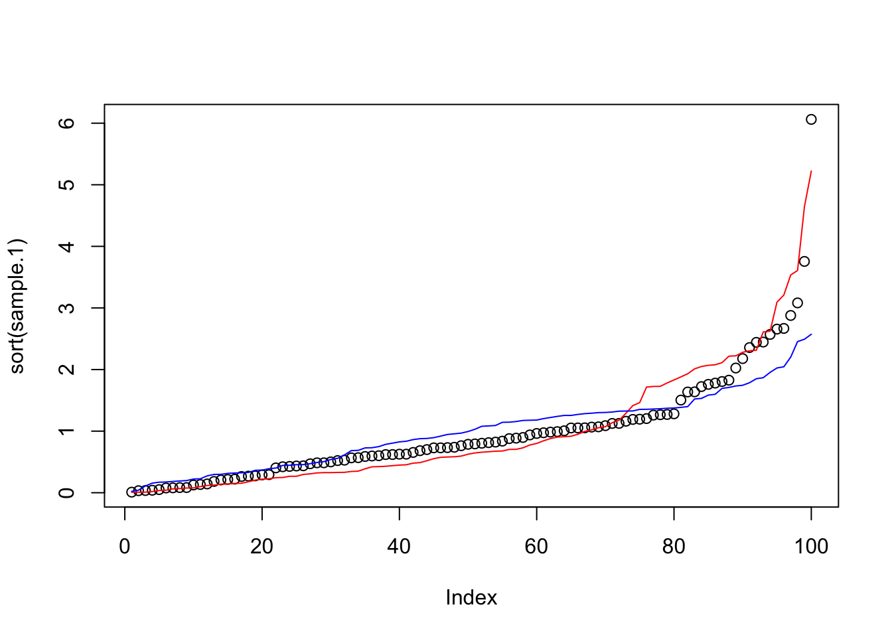
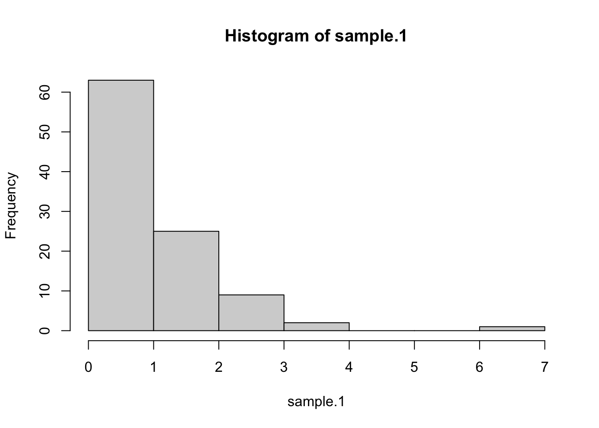
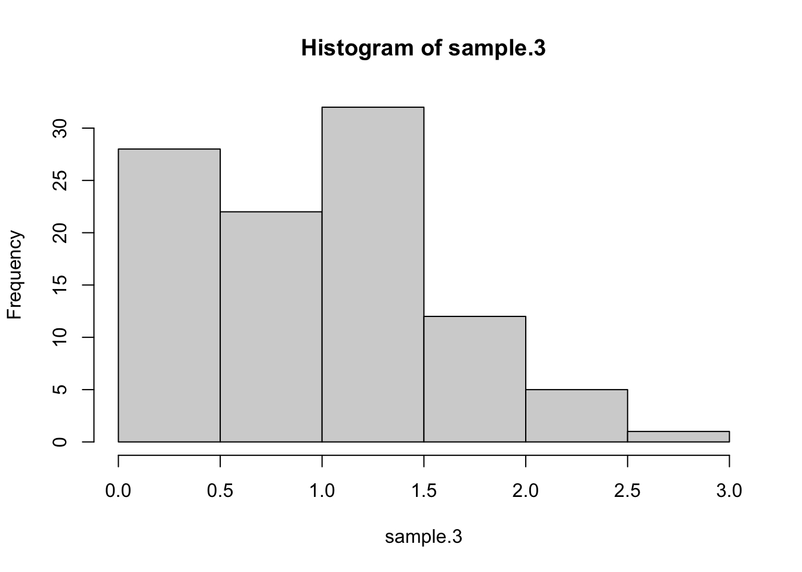

Traditional vs. Bayesian Bootstrap Standard Errors
Notes
Bootstrap
Standard Errors
Robust
Clustered
Bayesian
Random Weights
Comparing traditional resampling and Bayesian random-weight bootstrap standard errors.
Author
C. Luke Watson
Published
September 13, 2024
This is side-adventure to the last two posts. I wanted to code up a bootstrap using NLS, but honestly I needed to practice doing it with just OLS. We all learn about bootstrap, but the Bayesian bootstrap from Rubin 1981 was probably unknown to most prior to Peter Hull’s 2022 twitter thread.
I primarily learned this in classes or saw on Twitter, so I have no specific citations. However, I did end up using Claude.ai more than the last two posts to debug errors and find more efficient solutions.
Traditional vs Bayesian Bootstrap Intuition
I don’t know as much about bootstrapping as I would like, so this will be heavy on intuition.
The traditional bootstrap uses the idea that if there is sampling variation that we want to account for because our data is not iid, then we can do that sampling process using our data by sampling it according to a assumed sampling process. To implement, (1) sample data \(B\) times with replacement, (2) for each sample \(b\), calculate the main statistic of interest (e.g., \(\hat{\beta}_{b}\)), (3) and then calculate bootstrap SE via the SD of the bootstrapped statistics (e.g., \(\mathsf{sd}_{b}(\hat{\beta}_b)\)) or calculate CIs. For example, for robust SEs we just resample the observationswith replacement; while for cluster robust SEs, we sample the clusterswith replacement. This works out well enough with most models; however, it can get tricky when the model is non-linear or if there are fixed effects. Sometimes the estimation could fail, which is very annoying… especially if one did not code defensively.
The Bayesian bootstrap essentially replicates the sampling process but with sample weights that mimic the resampling. To implement, (1) create \(B\) sets of random weights \(\omega_{b}\) that follow the Dirichlet distribution (more later), (2) estimate a weighted version of the main statistic of interest, and then (3) calculate bootstrap SE via the SD of the bootstrapped statistics or calculate CIs. This makes an intuitive sense, but it is not actually as straight-forward as one may initially think. I won’t get into any of that. The main benefit is that typically weighting the data is a much simpler approach and much less likely to cause estimation failure.
Set up (same as Pt2)
I will simulate the data the same as in Pt2.
# clear workspacerm(list=ls())gc()
used (Mb) gc trigger (Mb) limit (Mb) max used (Mb)
Ncells 1075736 57.5 1668088 89.1 NA 1668088 89.1
Vcells 1887842 14.5 8388608 64.0 49152 3381670 25.9
# librarieslibrary(tidyverse) # general data manipulation
── Attaching core tidyverse packages ──────────────────────── tidyverse 2.0.0 ──
✔ dplyr 1.1.4 ✔ readr 2.1.6
✔ forcats 1.0.1 ✔ stringr 1.6.0
✔ ggplot2 4.0.1 ✔ tibble 3.3.1
✔ lubridate 1.9.4 ✔ tidyr 1.3.2
✔ purrr 1.2.1
── Conflicts ────────────────────────────────────────── tidyverse_conflicts() ──
✖ dplyr::filter() masks stats::filter()
✖ dplyr::lag() masks stats::lag()
ℹ Use the conflicted package (<http://conflicted.r-lib.org/>) to force all conflicts to become errors
library(broom) # model results to data.frame for compact viewinglibrary(optimx) # optim + extraslibrary(sandwich) # Adjust standard errorslibrary(lmtest) # Recalculate model errors with sandwich functions with coeftest()
Loading required package: zoo
Attaching package: 'zoo'
The following objects are masked from 'package:base':
as.Date, as.Date.numeric
library(rlang) # helps with functions
Attaching package: 'rlang'
The following objects are masked from 'package:purrr':
flatten, flatten_chr, flatten_dbl, flatten_int, flatten_lgl,
flatten_raw, invoke, splice
# Set random seed for reproducibilityset.seed(101)# obs - high so that coeficients are well estimatedn <-10000# clustersnum.clusters <-50grps <-sort(floor(runif(n)*num.clusters)+1)# cluster effectscluster.y.effect <-rnorm(num.clusters,0,2)cluster.u.effect <-rnorm(num.clusters,0,2)cluster.x1.effect <-rnorm(num.clusters,0,0.2)cluster.x2.effect <-rnorm(num.clusters,0,0.2)cluster.x1.x2.effect <-rnorm(num.clusters,0,0.2)# two x vars (will add a constant)x1=rnorm(n,1,1+ cluster.x1.effect/3)x2=rnorm(n,1,2)# clustered errorssd <-runif(n, min=0.5, max=4)s.true <- sd*(x1/5+1) # need to ensure that all s's are positiveerror <-rnorm(n,0,s.true) + cluster.u.effect[grps] + x1*cluster.x1.effect[grps] + x2*cluster.x2.effect[grps] + x1*x2*cluster.x1.x2.effect[grps]error <- error -mean(error)# true coefficentscoef.true <-c(1,-4,2)#Generate the dependent variabley1 <- coef.true[1] + (coef.true[2]*x1) + (coef.true[3]*x2) + error
Canned SEs
Here, I’ll quickly show how to get non-robust, robust, and clustered SEs. Note, this approach uses lmtest and sandwich. If I had a lot of FEs, then I would likely use feols package.
# Model, non robustm1.nonrobust <-lm(y1 ~ x1 + x2)# Robust standard errorsm1.robust <-coeftest(m1.nonrobust,vcov = vcovHC)# clusteredm1.clu <-coeftest(m1.nonrobust, vcov = vcovCL, cluster =~grps)# Function to extract standard errorsget_se <-function(model) {if (class(model)[1] =="lm") {return(sqrt(diag(vcov(model)))) } else {return(model[, "Std. Error"]) }}# Create a data frame with all standard errorsse_comparison <-data.frame( Coef = m1.nonrobust$coefficients,Non_Robust =get_se(m1.nonrobust),Robust =get_se(m1.robust),Clustered =get_se(m1.clu))# Round all numeric columns to 4 decimal placesse_comparison <- se_comparison %>%mutate(across(where(is.numeric), ~round(., 4)))# Display the tablese_comparison
First, I am going to show a traditional bootstrap. I am going to create a bootstrap function that can do either full-sample sampling or cluster-sampling. Cluster-sampling is best if we believe standard errors have cluster-dependence; else, if independent, then full-sample sampling is best.
df <-data.frame(y1=y1,x1=x1,x2=x2,grps = grps) %>%mutate(id =row_number())rm(y1,x1,x2,grps)##### Traditional Bootstrap functionf.traditional.bootstrap <-function(arg.data,arg.model.formula, arg.boots =10,arg.cluster =NULL) {############################################################# get cluster variable title arg.cluster_quo <-enquo(arg.cluster)# do this only once but only if clusteredif (!(is.null(substitute(arg.cluster))==T)) { unique_clusters <- arg.data %>%distinct(!!arg.cluster_quo) n_clusters <-nrow(unique_clusters) }# Initialize results matrix results <-matrix(NA,nrow =length(coef(lm(arg.model.formula, data = arg.data))), ncol = arg.boots)# Perform bootstrapfor (i in1:arg.boots) {if (is.null(substitute(arg.cluster))==T) {# Full-Sample (Independent) Sampling# --> sample obs with replacement df.boot <- arg.data %>%ungroup() %>%slice_sample(n=nrow(.), replace = T) } else {# Cluster-sampling (Dependent) # --> Sample clusters with replacement sampled_clusters <- unique_clusters %>%slice_sample(n = n_clusters, replace =TRUE)# Join the sampled clusters back to the original data df.boot <- arg.data %>%right_join(sampled_clusters, by =as.character(quo_name(arg.cluster_quo)),relationship ="many-to-many") }# store OLS coefs for each iteration results[,i] <-as.numeric(lm(formula = arg.model.formula,data=df.boot)$coefficients) }# Calculate bootstrap standard errors via sd boot_se <-apply(results, 1, sd)# return(boot_se)############################################################}# se_comparison$trad.ind <-f.traditional.bootstrap(df, as.formula("y1 ~ x1 + x2"), arg.boots =500)se_comparison$trad.clu <-f.traditional.bootstrap(df, as.formula("y1 ~ x1 + x2"), arg.boots =500, arg.cluster=grps)# Round all numeric columns to 4 decimal placesse_comparison <- se_comparison %>%mutate(across(where(is.numeric), ~round(., 4)))# Display the tablese_comparison
Next, I want to show how to do the Bayesian Bootstrap. As discussed, the weights need to be drawn from a Dirichlet distribution. We can draw \(x_{i}\sim \text{Dirichlet}(\vec{\alpha})\) by drawing \(y_{i} \sim \text{Gamma}(\text{shape}=\vec{\alpha}, \text{rate}=1)\) and then calculating \(x_{i} = y_{i} / \sum_{j\in N} y_{j}\). Wikipedia says it can also be done assuming \(\vec{\alpha}=\vec{1}\) using the uniform distribution, which it calls ‘Stick Breaking.’ Both are below.
# Function to sample from Dirichlet distribution using base Rrdirichlet_base <-function(num.vars, alpha) { K <-length(alpha) x <-matrix(rgamma(num.vars * K, shape = alpha, rate =1),nrow = num.vars, byrow =TRUE) x_sum <-rowSums(x)return(as.numeric((x / x_sum)*K))}# Function to sample from Dirichlet(1,...,1) using the stick-breaking methodrdirichlet_stick_breaking <-function(num.vars, num.draws) {# samples <-matrix(nrow = num.vars, ncol = num.draws)#for (i in1:num.vars) {# Generate K-1 uniform random numbers# i <- 1 u <-runif(num.draws-1)# Add 0 and 1, then sort breaks <-sort(c(0, u, 1))# Calculate differences samples[i,] <-diff(breaks) }#return(as.numeric(samples*num.draws))}# Set parameters# Draw samples# Draw the sample sample.1<-as.numeric(rdirichlet_base(num.vars =1, alpha =rep(1,100)))sample.2<-as.numeric(rdirichlet_stick_breaking(num.vars =1, num.draws=100))sample.3<-as.numeric(rdirichlet_base(num.vars =1, alpha =sample(1:10,100,replace=T)))plot(sort(sample.1))lines(sort(sample.2), col="red")lines(sort(sample.3), col="blue")

hist(sample.1)

hist(sample.3)

Bayesian Bootstrap
##### Bayesian Bootstrapf.bayesian.bootstrap <-function(arg.data,arg.model.formula,arg.boots =10,arg.cluster =NULL) {############################################################# arg.cluster_quo <-enquo(arg.cluster)# Initialize results matrix results <-matrix(NA,nrow =length(coef(lm(arg.model.formula, data = arg.data))), ncol = arg.boots)# Perform bootstrapfor (i in1:arg.boots) {if (is.null(substitute(arg.cluster))==T) {# For robust standard errors, each observation gets its own weight arg.data <- arg.data %>%ungroup() %>%mutate(wts =rgamma(n(), shape =1, rate =1),wts = wts /sum(wts)) } else {# For cluster-robust, each cluster gets a weight arg.data <- arg.data %>%ungroup() %>%distinct(!!arg.cluster_quo) %>%mutate(uu =rgamma(n(), shape =1, rate =1),wts = uu /sum(uu)) %>%select(!!arg.cluster_quo, wts) %>%full_join(arg.data, by =as.character(quo_name(arg.cluster_quo))) } results[,i] <-as.numeric(lm(formula = arg.model.formula,data=arg.data,weights = wts)$coefficients)# drop the wts (only matters for cluster given approach) arg.data <- arg.data %>%select(-wts) }# Calculate bootstrap standard errors boot_se <-apply(results, 1, sd)return(boot_se)}# se_comparison$bayes.ind <-f.bayesian.bootstrap(df, as.formula("y1 ~ x1 + x2"), arg.boots =500)se_comparison$bayes.clu <-f.bayesian.bootstrap(df, as.formula("y1 ~ x1 + x2"), arg.boots =500, arg.cluster=grps)# Round all numeric columns to 4 decimal placesse_comparison <- se_comparison %>%mutate(across(where(is.numeric), ~round(., 4)))# Display the tablese_comparison